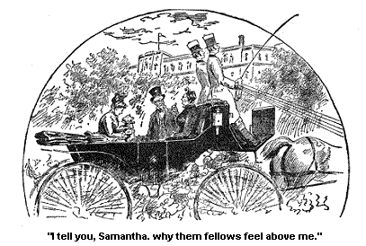
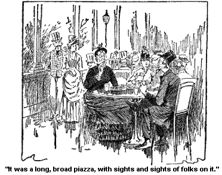

MISS G. WASHINGTON FLAMM.
Miss G. Washington Flamm is a very fashionable woman. Thomas Jefferson carried her through a law-suit, and carried her stiddy and safe. (She wuz in the right on't, there haint no doubt of that.)
She had come to Jonesville for the summer to board, her husband bein' to home at the time in New York village, down on Wall street. He had to stay there, so she said. I don't know why, but s'pose sunthin' wuz the matter with the wall; anyway he couldn't leave it. And she went round to different places a good deal for her health. There didn't seem to be much health round where her husband wuz, so she had to go away after it, go a huntin' for it, way over to Europe and back ag'in; and away off to California, and Colorado, and Long Branch, and Newport, and Saratoga, and into the Country. It made it real bad for Miss Flamm.
Now I always found it healthier where Josiah wuz than in any other place. Difference in folks I s'pose. But they say there is sights and sights of husbands and wives jest like Miss Flamm. Can't find a mite of health anywhere near where their families is, and have to poke off alone after it. It makes it real bad for 'em.
But anyway she came to Jonesville for her health. And she hearn of Thomas Jefferson and employed him. It wuz money that fell onto her from her father, or that should have fell, that she wuz a tryin' to git it to fall. And he won the case. It fell. She wuz rich as a Jew before she got this money, but she acted as tickled over it as if she wuzn't worth a cent. (Human nater.) She paid Thomas J. well and she and Maggie and he got to be quite good friends.
She is a well-meanin', fat little creeter, what there is of her. I have seen folks smaller than she is, and then ag'in we seen them that wuzn't so small. She is middlin' good lookin', not old by any means, but there is a deep wrinkle plowed right into her forward, and down each side of her mouth. They are plowed deep. And I have always wondered to myself who held the plow.
It wuz'nt age, for she haint old enough. Wuz it Worry? That will do as good a day's work a plowin' as any creeter I ever see, and work as stiddy after it gits to doin' day's works in a female's face.
Waz it Dissatisfaction and Disappointment? They, too, will plow deep furrows and a sight of 'em. I don't know what it wuz. Mebby it wuz her waist and sleeves. Her sleeves wuz so tight that they kep' her hands lookin' a kinder bloated and swelled all the time, and must have been dretful painful. And her waist -- it wuz drawed in so at the bottom, that to tell the livin' truth it wuzn't much bigger'n a pipe's tail. It beat all to see the size immegatly above and below, why it looked perfectly meraculous. She couldn't get her hands up to her head to save her life; if she felt her head a tottlin' off her shoulders she couldn't have lifted her hands to have stiddied it, and, of course, she couldn't get a long breath, or short ones with any comfort.
Mebby that worried her, and then ag'in, mebby it wuz dogs. I know it would wear me out to take such stiddy care on one, day and night. I never seemed to feel no drawin's to take care of animals, wash 'em, and bathe 'em, and exercise 'em, etc., etc., never havin' been in the menagery line and Josiah always keepin' a boy to take care of the animals when he wuzn't well. Mebby it wuz dogs. Anyway she took splendid care of hern, jest wore herself out a doin' for it stiddy day and night and bein' trampled on, and barked at almost all the time she wuz a bringin' on it up.
Yes, she took perfectly wonderful care on't, for a woman in her health. She never had been able to take any care of her children, bein' very delicate. Never had been well enough to have any of 'em in the room with her nights, or in the day time either. They tired her so, and she wuz one of the wimmen who felt it wuz her duty to preserve her health for her family's sake. Though when they wuz a goin' to get the benefit of her health I don't know.
But howsumever she never could take a mite of care of her children, they wuz brought up on wet nurses, and bottles, etc., etc., and wuz rather weakly, some on 'em. The nurses, wet and dry ones both, used to gin 'em things to make 'em sleep, and kinder yank 'em round and scare 'em nights to keep 'em in the bed, and neglect 'em a good deal, and keep 'em out in the brilin' sun when they wanted to see their bows; and for the same reeson keepin' em out in their little thin dresses in the cold, and pinch their little arms black and blue if they went to tell any of their tricks. And they learnt the older ones to be deceitful and sly and cowerdly. Learnt 'em to use jest the same slang phrases and low language that they did; tell the same lies, and so they wuz a spilin' 'em in every way; spilin' their brains with narcotics, their bodies by neglect and bad usage, and their minds and morals by evil examples.
You see some nurses are dretful good. But Miss Flamm's health bein' so poor and her mind bein' so took up with fashion, dogs, etc., that she couldn't take the trouble to find out about their characters and they wuz dretful poor unbeknown to her. She had dretful bad luck with 'em, and the last one drinked, so I have been told.
Yes, it made it dretful bad for Miss Flamm that her health was so poor, and her fashionable engagements so many and arduous that she didn't have the time to take a little care of her children and the dog too. For you could see plain, by the care that she took of that dog, what a splendid hand she would be with the children, if she only had the time and health.
Why, I don't believe there wuz another dog in America, either the upper or lower continent, that had more lovin', anxus, intelligent, devoted attention than that dog had, day and night, from Miss Flamm. She took 2 dog papers, so they say, to get the latest information on the subject; she compared notes with other dog wimmen, I don't say it in a runnin' way at all. I mean wimmen who have gin their hull minds to dog, havin', some on 'em, renounced husbands, and mothers, and children for dog sake.
You know there are sich wimmen, and Miss Flamm read up and studied with constant and absorbed attention all the latest things on dog. Their habits, their diet, their baths, their robes, their ribbons, and bells, and collars, their barks -- nothin' escaped her; she put the best things she learned into practice, and studied out new ones for herself. She said she had reduced the subject to a science, and she boasted proudly that her dog, the last one she had, went ahead of any dog in the country. And I don't know but it did. I knew it had a good healthy bark. A loud strong bark that must have made it bad for her in the night. It always slept with her, for she didn't dast to trust it out of her sight nights. It had had some spells in the night, kinder chills, or spuzzums like, and she didn't dast to be away from it for a minute.
She wouldn't let the wet nurse tech it, for her youngest child, little G. Washington Flamm, Jr., wuzn't very healthy, and Miss Flamm thought that mebby the dog might ketch his weakness if the nurse handled it right after she had been nursin' the baby. And then she objected to the nurse, so I hearn, on account of her bein' wet. She wanted to keep the dog dry. I hearn this; I don't know as it wuz so. But I hearn these things long enough before I ever see her. And when I did see her I see that they didn't tell me no lies about her devotion to the dog, for she jest worshiped it, that was plain to be seen.
Wall, she has got a splendid place at Saratoga; a cottage she calls it. I, myself, should call it a house, for it is big as our house and Deacon Peddick'ses and Mr. Bobbett'ses all put together, and I don't know but bigger.
Wall, she invited Josiah and me to drive with her, and so her dog and she stopped for us. (I put the dog first, for truly she seemed to put him forward on every occasion in front of herself, and so did her high-toned relatives, who wuz with her.)
Or I s'pose they wuz her relatives for they sot up straight, and wuz dretful dressed up, and acted awful big-feelin' and never took no notice of Josiah and me, no more than if we hadn't been there. But good land! I didn't care for that. What if they didn't pay any attention to us? But Josiah, on account of his tryin' to be so fashionable, felt it deeply, and he sez to me while Miss Flamm wuz a bendin' down over the dog, a talkin' to him, for truly it wuz tired completely out a barkin' at Josiah, it had barked at him every single minute sense we had started, and she wuz a talkin' earnest to it a tryin' to soothe it, and Josiah whispered to me, "I'll tell you, Samantha, why them fellers feel above me; it is because I haint dressed up in sech a dressy fashion. Let me once have on a suit like their'n, white legs and yellow trimmin's, and big shinin' buttons sot on in rows, and white gloves, and rosettes in my hat -- why I could appear in jest as good company as they go in."

Sez I, "You are too old to be dressed up so gay, Josiah Allen. There is a time for all things. Gay buttons and rosettes look well with brown hair and sound teeth, but they ort to gently pass away when they do. Don't talk any more about it, Josiah, for I tell you plain, you are too old to dress like them, they are young men."
"Wall," he whispered, in deep resolve, "I will have a white rosette in my hat, Samantha. I will go so far, old or not old. What a sensation it will create in the Jonesville meetin'-house to see me come a walkin' proudly in, with a white rosette in my hat."
"You are goin' to walk into meetin' with your hat on, are you?" sez I coldly.
"Oh, ketch a feller up. You know what I mean. And don't you think I'll make a show? Won't it create a sensation in Jonesville?"
Sez I: "Most probable it would. But you haint a goin' to wear no bows on your hat at your age, not if I can break it up," sez I.
He looked almost black at me, and sez he, "Don't go too fur, Samantha! I'll own you've been a good wife and mother and all that, but there is a line that you must stop at. You mustn't go too fur. There is some things in which a man must be footloose, and that is in the matter of dress. I shall have a white rosette on my hat, and some big white buttons up and down the back of my overcoat! That is my aim, Samantha, and I shall reach it if I walk through goar."
He uttered them fearful words in a loud fierce whisper which made the dog bark at him for more'n ten minutes stiddy, at the top of its voice, and in quick short yelps.
If it had been her young child that wuz yellin' at a visitor in that way and ketchin' holt of him, and tearin' at his clothes, the child would have been consigned to banishment out of the room, and mebby punishment. But it wuzn't her babe and so it remained, and it dug its feet down into the satin and laces and beads of Miss Flamm's dress, and barked to that extent that we couldn't hear ourselves think.
And she called it "sweet little angel," and told it it might "bark its little cunnin' bark." The idee of a angel barkin'; jest think on't. And we endured it as best we could with shakin' nerves and achin' earpans.
It wuz a curius time. The dog harrowin' our nerve, and snappin' at Josiah anon, if not oftener, and ketchin' holt of him anywhere, and she a callin' it a angel; and Josiah a lookin' so voyalent at it, that it seemed almost as if that glance could stun it.
It wuz a curius seen. But truly worse wuz to come, for Miss Flamm in an interval of silence, sez, "We will go first to the Gizer Spring, and then, afterwards, to the Moon."
Or, that is what I understand her to say. And though I kep' still, I wuz determined to keep my eyes out, and if I see her goin' into anything dangerus, I wuz goin' to reject her overtures to take us. But thinkses I to myself, "We always said I believed we should travel to the stars some time, but I little thought it would be to-day, or that I should go in a buggy."
Josiah shared my feelin's I could see, for he whispered to me, "Don't le's go, Samantha, it must be dangerus!"
But I whispered back, "Le's wait, Josiah, and see. We won't do nothin' percipitate, but," sez I, "this is a chance that we most probable never will have ag'in. Don't le's be hasty." We talked these things in secret, while Miss Flamm wuz a bendin' over, and conversin' with the dog. For Josiah would ruther have died than not be s'pozed to be "Oh Fay," as Maggie would say, in everything fashionable. And it has always been my way to wait and see, and count 10, or even 20, before speakin'.
And then Miss Flamin sez sunthin' about what beautiful fried potatoes you could get there in the moon, and you could always get them, any time you wanted 'em.
And the very next time she went to kissin' the dog so voyalently as not to notice us, my Josiah whispered to me and sez, "Did you have any idee that wuz what the old man wuz a doin'? I knew he wuz always a settin' up there in the moon, but it never passed my mind that he wuz a fryin' potatoes."
But I sez, "Keep still, Josiah. It is a deep subject, a great undertakin', and it requires caution and deliberation."
But he sez,"I haint a goin', Samantha! Nor I haint a goin' to let you go. It is dangerus."
But I kinder nudged him, for she had the dog down on her lap, and was ready to resoom conversation. And about that time we got to the entrance of the spring, and one of her relatives got down and opened the carriage door.
I wondered ag'in that she didn't introduce us. But I didn't care
if she didn't. I felt that I wuz jest as good as they wuz, if they
wuz so haughty. But Josiah wantin' to make himself agreeable to 'em
(he hankers after gettin' into high society), he took off his hat and bowed
low to 'em, before he got out, and sez
he, "I am proud to know you, sir," and tried to shake hands with him.
But the man rejected his overtoors and looked perfectly wooden, and oninterested.
A big-feelin', high-headed creeter. Josiah Allen is as good as he
is any day. And I whispered to him and sez, "Don't demean yourself
by tryin' to force your company onto them any more."
"Wall," he whispered back, "I do love to move in high circles."
Sez I, "Then I shouldn't think you would be so afraid of the undertakin' ahead on us. If neighborin' with the old man in the moon, and eatin' supper with him, haint movin' in high circles, then I don't know what is."
"But I don't want to go into anything dangerus," sez he.
But jest then Miss Flamm.spoke to me, and I moved forward by her side and into a middlin' big room, and in the middle wuz a great sort of a well like, with the water a bubblin' up into a clear crystal globe, and a sprayin' up out of it, in a slender misty sparklin' spray. It wuz a pretty sight. And we drinked a glass full of it a piece, and then we wandered out of the back door-way, and went down into the pretty; old-fashioned garden back of the house.
Josiah and me and Miss Flamm went. The dog and the two relatives didn't seem to want to go. The relatives sot up there straight as two sticks, one of 'em holdin' the dog, and they didn't even look round at us.
"Felt too big to go with us," sez Josiah, bitterly, as we went down the steps. "They won't associate with me."
"Wall, I wouldn't care if I wuz in your place, Josiah Allen," sez I, "you are jest as good as they be, and I know it."
"You couldn't make 'em think so, dumb 'em," sez he.
I liked the looks of it down there. It seems sometimes as if Happiness gets kinder homesick, in the big dusty fashionable places, and so goes back to the wild, green wood, and kinder wanders off, and loafs round, amongst the pine trees, and cool sparklin' brooks and wild flowers and long shinin' grasses and slate stuns, and etc., etc.
I don't believe she likes it half so well up in the big hotel gardens or Courtin' yards, as she does down there. You see it seems as if Happiness would have to be more dressed up, up there, and girted down, and stiff actin', and on her good behavior, and afraid of actin' or lookin' onfashionable. But down here by the side of the quiet little brook, amongst the cool, green grasses, fur away from diamonds, and satins, and big words, and dogs, and parasols, and so many, many that are a chasin' of her and a follerin' of her up, it seemed more as if she loved to get away from it all, and get where she could take her crown off, lay down her septer, onhook her corset, and put on a long loose gown, and lounge round and enjoy herself (metafor).
We had a happy time there. We went over the little rustick bridges which would have been spilte in my eyes if they had been rounded off on the edges, or a mite of paint on 'em. Truly, I felt that I had seen enough of paint and gildin' to last me through a long life, and it did seem such a treat to me to see a board ag'in, jest a plain rough bass-wood board, and some stuns a lyin' in the road, and some deep tall grass that you had to sort a wade through.
Miss Flamm seemed to enjoy it some down there, though she spoke of the dog, which she had left up with her relatives.
"3 big-feelin' ones together," I whispered to Josiah.
And he sez, "Yes, that dog is a big-feelin' little cuss-tomer. And if I wuz a chipmunk he couldn't bark at me no more than he duz."
And I looked severe at Josiah and sez I, "If you don't jine your syllables closer together you will see trouble, Josiah Allen. You'll find yourself swearin' before you know it."
"Oh shaw, sez he, "customer haint a swearin' word; ministers use it. I've hearn 'em many a time."
"Yes," sez I, "but they don't draw it out as you did, Josiah Allen."
"Oh! wall! Folks can't always speak up pert and quick when they are off on pleasure exertions and have been barked at as long as I have been. But now I've got a minutes chance," sez he, "let me tell you ag'in, don't you make no arraingments to go to the Moon. It is dangerus, and I won't go myself, nor let you go."
"Let," sez I to myself. "That is rather of a gaulin' word to me. Won't let me go." But then I thought ag'in, and thought how love and tenderness wuz a dictatin' the term, and I thought to myself, it has a good sound to me, I like the word. I love to hear him say he won't let me go.
And truly to me it looked hazerdus. But Miss Flamm seemed ready to go on, and onwillin'ly I followed on after her footsteps. But I looked 'round, and said "Good-bye" in my heart, to the fine trees, and cleer, brown waters of the brook, the grass, and the wild flowers, and the sweet peace that wuz over all.
"Good-bye," sez I. "If I don't see you ag'in, you'll find some other lover that will appreciate you, though I am fur away."
They didn't answer me back, none on 'em, but I felt that they understood me. The pines whispered sunthin' to each other, and the brook put its moist lips up to the pebbly shore and whispered sunthin' to the grasses that bent down to hear it. I don't know exactly what it wuz, but it wuz sunthin' friendly I know, for I felt it speak right through the soft, summer sunshine into my heart. They couldn't exactly tell what they felt towards me, and I couldn't exactly tell what I felt towards them, yet we understood each other; curi'us, haint it?
Wall, we got into the carriage ag'in, one of her relatives gettin' down to open the door. They knew what good manners is; I'll say that for 'em. And Miss Flamm took her dog into her arms seemin'ly glad to get holt of him ag'in, and kissed it several times with a deep love and devotedness. She takes good care of that dog. And what makes it harder for her to handle him is, her dress is so tight, and her sleeves. I s'pose that is why she can't breathe any better, and what makes her face and hands red, and kinder swelled up. She can't get her hands to her head to save her, and if a assassin should strike her, she couldn't raise her arm to ward off the blow if he killed her. I s'pose it worrys her.
And she has to put her bunnet on jest as quick as she gets her petticoats on, for she can't lift he arms to save her life after she gets her corsets on. She owned up to me once that it made her feel queer to be a walkin' 'round her room with not much on only her bunnet all trimmed off with high feathers and artificial flowers.
But she said she wuz willing to do anythin' necessary, and she felt that she must have her waist taper, no matter what stood in the way on't. She loves the looks of a waist that tapers. That wuz all the fault she found with the Goddus of Liberty enlightenin' the world in New York Harber. We got to talkin' about it and she said, "If that Goddus only had corsets on, and sleeves that wuz skin tight, and her overskirt looped back over a bustle, it would be perfect!"
But I told her I liked her looks as well ag'in as she wuz. "Why," sez I, "How could she lift her torch above her head? And how could she ever enlighten the world, if she wuz so held down by her corsets and sleeves that she couldn't wave her torch?"
She see in a minute that it couldn't be done. She owned up that she couldn't enlighten the world in that condition, but as fur as looks went, it would be perfectly beautiful.
But I don't think so at all. But, as I say, Miss Flamm has a real hard time on't, all bard down as she is, and takin' all the care of that dog, day and night. She is jest devoted to it.
Why jest before we started a little lame girl with a shabby dress, but a face angel sweet, came to the side of the carriage to sell some water lilies. Her face looked patient, and wistful, and she jest held out her flowers silently, and stood with her bare feet on the wet ground and her pretty eyes lookin' pitifully into our'n. She wanted to sell 'em awfully, I could see. And I should have bought the hull of 'em immegitly, my feelin's was sech, but onfortionably I had left my port-money in my other pocket, and Josiah said he had left his (mebby he had). But Miss Flamm would have bought 'em in a minute, I knew, the child's face looked so mournful and appealin'; she would have bought 'em, but she wuz so engrossed by the dog; she wuz a holdin' him up in front of her a admirin' and carressin' of him, so's she never ketched sight of the lame child.
No body, not the best natured creeter in the world, can see through a dog when it is held clost up to the eye, closer than anything else.
Wall, we drove down to what they called Vichy Spring and there on a pretty pond clost to the springhouse, we see a boat with a bycycle on it, and a boy a ridin' it. The boat wuz rigged out to look like a swan with its wings a comin' up each side of the boy. And down on the water, a sailin' along closely and silently wuz another swan, a shadow swan, a follerin' it right along. It wuz a fair seen.
And Josiah sez to me, "He should ride that boat before he left Saratoga; he said that wuz a undertakin' that a man might be proud to accomplish."
Sez I, "Josiah Allen, don't you do anything of the kind."
"I must, Samantha," sez he. And then he got all animated about fixin' up a boat like it at home. Sez he, "Don't you think it would be splendid to have one on the canal jest beyond the orchard?" And sez he, "Mebby, bein' on a farm, it would be more appropriate to have a big goose sculptured out on it; don't you think so?"
Sez I, "Yes, it would be fur more appropriate, and a goose a ridin' on it. But," sez I, "you will never go into that undertakin' with my consent, Josiah Allen."
"Why," sez he, "it would be a beautiful recreation; so uneek."
But at that minute Miss Flamm gin the order to turn round and start for the Moon, or that is how I understood her, and I whispered to Josiah and sez, "She means to go in the buggy, for the land's sake!"
And Josiah sez, "Wall, I haint a goin' and you haint. I won't let you go into anythin' so dangerus. She will probably drive into a baloon before long, and go up in that way, but jest before she drives in, you and I will get out, Samantha, if we have to walk back."
"I never heard of anybody goin' up in a baloon with two horses and a buggy," sez I.
"Wall, new things are a happenin' all the time, Samantha. And I heard a feller a talkin' about it yesterday. You know they are a havin' the big political convention here, and he said, (he wuz a real cute chap too,) he said, 'if the wind wasted in that convention could be utilized by pipes goin' up out of the ruff of that buildin' where it is held,' he said, 'it would take a man up to the moon.' I heerd him say it. And now, who knows but they have got it all fixed. There wuz dretful windy speeches there this mornin'. I hearn 'em, and I'll bet that is her idee, of bein' the first one to try it; she is so fashionable. But I haint a goin' up in no sech a way."
"No," sez I. "Nor I nuther. It would be fur from my wishes to be carried up to the skies on the wind of a political convention. "Though," sez I reasonably, "I haint a doubt that there wuz sights, and sights of it used there."
But jest at this minute Miss Flamm got through talkin' with her relatives about the road, and settled down to caressin' the dog ag'in, and Josiah hadn't time to remark any further, only to say, "Watch me, Samantha, and when I say jump, jump."
And then we sot still but watchful. And Miss Flamm kissed the dog several times and pressed him to her heart that throbbed full of such a boundless love for him. And he lifted his head and snapped at a fly, and barked at my companion with a renewed energy, and showed his intellect and delightful qualities in sech remarkable ways, that filled Miss Flamm's soul deep with a proud joy in him. And then he went to sleep a layin, down in her lap, a mashin' down the delicate lace and embroidery and beads. He had been a eating the beads, I see him gnaw off more than two dozen of 'em, and I called her attention to it, but she said, "The dear little darlin' had to have some such recreation." And she let him go on with it, a mowin' 'em down, as long as he seemed to have a appetite for 'em. And ag'in she called him "angel." The idee of a angel a gnawin' off beads and a yelpin'!
And I asked her, and I couldn't help it. How her baby wuz that afternoon, and if she ever took it out to drive?
And she said she didn't really know how it wuz this afternoon; it wuzn't very well in the mornin'. The nurse had it out somewhere, she didn't really know just where. And she said, no, she didn't take it out with her at all -- fur she didn't feel equal to the care of it, in this hot weather.
Miss Flamm haint very well I could see that. The care of that dog is jest a killin' her, a carryin' it round with her all the time daytimes, and a bein' up with it so much nights. She said it had a dretful chill the night before, and she had to get up to warm blankets to put round it; "its nerves wuz so weak," she said, "and it wuz so sensative that she could not trust it to a nurse." She has a hard time of it; there haint a doubt of it.
Wall, it wuz anon, or jest about anon, that Miss Flamm turned to me and sez, "Moon's is one of the pleasantest places on the lake. I want you to see it; folks drive out there a sight from Saratoga."
And then I looked at Josiah, and Josiah looked at me, and peace and happiness settled down ag'in onto our hearts.
Wall, we got there considerably before anon and we found that Moon's insted of bein' up in another planet wuz a big, long sort a low buildin' settled right down onto this old earth, with a immense piazza stretchin' along the side on't.
And Miss Flamm and Josiah and me disembarked from the carriage right onto the end of it. But the dog and her relatives stayed back in the buggy and Josiah spoke bitterly to me ag'in but low, "They think it would hurt 'em to associate with me a little, dumb 'm; but I am jest as good as they be any day of the week, if I haint dressed up so fancy."
"That's so," sez I, whisperin' back to him, "and don't let it worry you a mite. Don't try to act like Haman," sez I. "You are havin' lots of the good things of this world, and are goin' to have some fried potatoes. Don't let them two Mordecais at the gate, poison all your happiness, or you may get come up with jest as Haman wuz."
"I'd love to hang'em," sez he, "as high as Haman's gallows would let 'em hang."
"Why," sez I, "they haint injured you in any way. They seem to eat like perfect gentlemen. A little too exclusive and aristocratic, mebby, but they haint done nothin' to you."
"No," sez he, "that is the stick on it, here we be, three men with a lot of wimmen. And they can't associate with me as man with man, but set off by themselves too dumb proud to say a word to me, that is the dumb of it."
But at this very minute, before I could rebuke him for his feerful profanity, Miss Flamm motioned to us to come and take a seat round a little table, and consequently we sot.
It was a long broad piazza with sights and sights of folks on it a settin' round little tables like our'n, and all a lookin' happy, and a laughin', and a talkin' and a drinkin' different drinks, sech as lemonade, etc., and eatin' fried potatoes and sech.

And out in the road by which we had come, wuz sights and sights of vehicles and conveyances of all kinds from big Tally Ho coaches with four horses on 'em, down to a little two wheeled buggy. The road wuz full on'em.
In front of us, down at the bottom of a steep though beautiful hill, lay stretched out the clear blue waters of the lake. Smooth and tranquil it looked in the light of that pleasant afternoon, and fur off, over the shinin' waves, lay the island. And white-sailed boats wuz a sailin' slowly by, and the shadow of their white sails lay down in the water a floatin' on by the side of the boats, lookin' some like the wings of that white dove that used to watch over Lake Saratoga.
And as I looked down on the peaceful seen, the feelin's I had down in the wild wood, back of the Gizer Spring come back to me. The waves rolled in softly from fur off, fur off, bringin' a greetin' to me unbeknown to anybody, unbeknown to me. It come into my heart unbidden, unsought, from afur, afur.
Where did it come from that news of lands more beautiful than any that lay round Mr. Moons'es, beautiful as it wuz.
Echoes of music sweeter fur than wuz a soundin' from the band down by the shore, music heard by some finer sense than heard that, heavenly sweet, heavenly sad, throbbin' through the remoteness of that country, through the nearness of it, and fillin' my eyes with tears. Not sad tears, not happy ones, but tears that come only to them that shet their eyes and behold the country, and love it. The waves softly lappin' the shore brought a message to me; my soul hearn it. Who sent it? And where, and when, and why?
Not a trace of these emotions could be read on my countenance as I sot there calmly a eatin' fried potatoes. And they did go beyond anything I ever see in the line of potatoes, and I thought I could fry potatoes with any one: Yes, such wuz my feelin's when I sot out for Mr. Moons'es. But I went back a thinkin' that potatoes had never been fried by me, sech is the power of a grand achievment over a inferior one, and so easy is the sails taken down out of the swellin' barge of egotism.
No, them potatoes you could carry in your pocket for weeks right by the side of the finest lace, and the lace would be improved by the purity of 'em. Fried potatoes in that condition, you could eat 'em with the lightest silk gloves one and the tips of the fingers would be improved by 'em; fried potatoes, jest think on't!
Wall, we had some lemonade too, and if you'll believe it, -- I don't s'pose you will but it is the truth, -- there wuz straws in them glasses too. But you may as well believe it for I tell the truth at all times, and if I wuz a goin' to lie, I wouldn't lie about lemons. And then I've always noticed it, that if things git to happenin' to you, lots of things jest like it will happen. That made twice in one week or so, that I had found straws in my tumbler. But then I have had company three days a runnin', rainy days too sometimes. It haint nothin' to wonder at too much. Any way it is the truth.
Wall, we drinked our lemonade, I a quietly takin' out the straws and droppin' 'em on the floor at my side in a quiet ladylike manner, and Josiah, a bein' wunk at by me, doin' the same thing.
And anon, our carriage drove up to the end of the piazza agin and we sot sail homewards. And the dog barked at Josiah almost every step of the way back, and when we got to our boardin' place, Miss Flamm shook hands with us both, and her relatives never took a mite of notice of us, further than to jump down and open the carriage door for us as we got out. (They are genteel in their manners, and Josiah had to admit that they wuz, much as his feelin's wuz hurt by their haughtiness towards him.)
And then the dog, and Miss Flamm and Miss Flamm's relatives drove off.